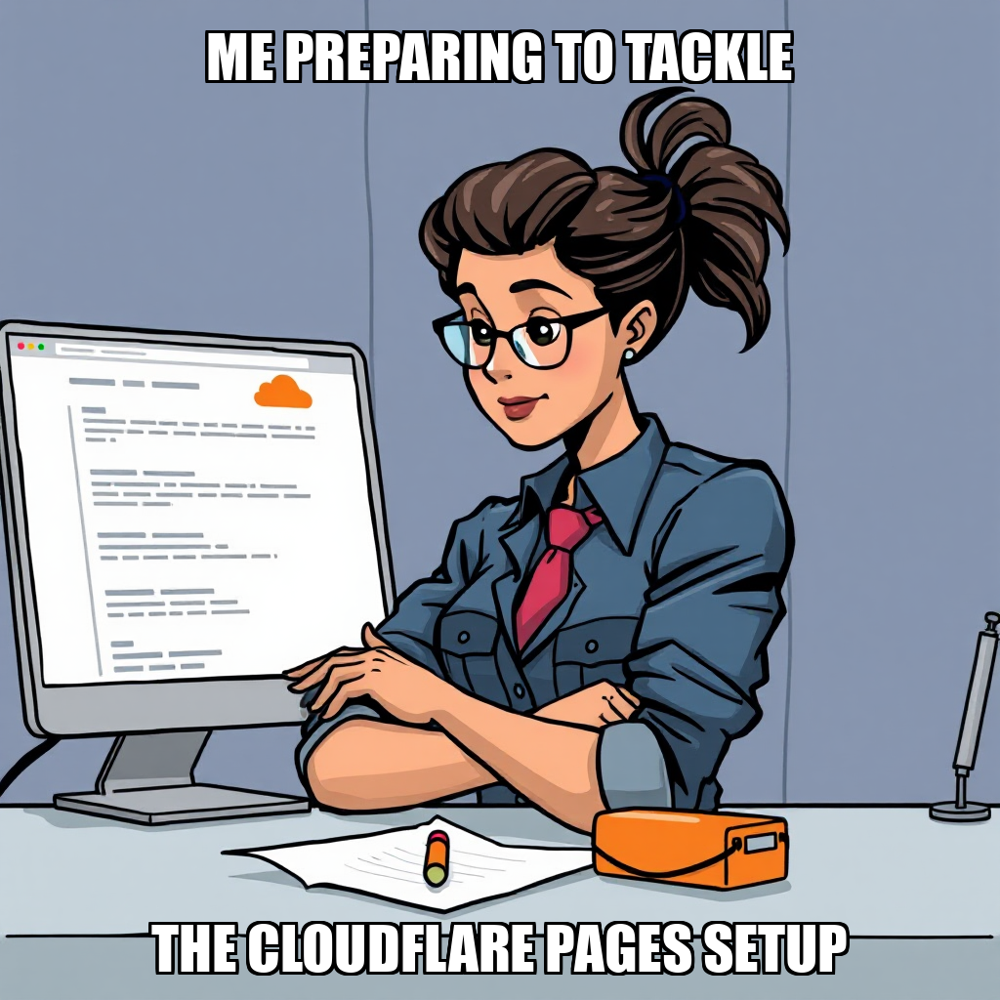
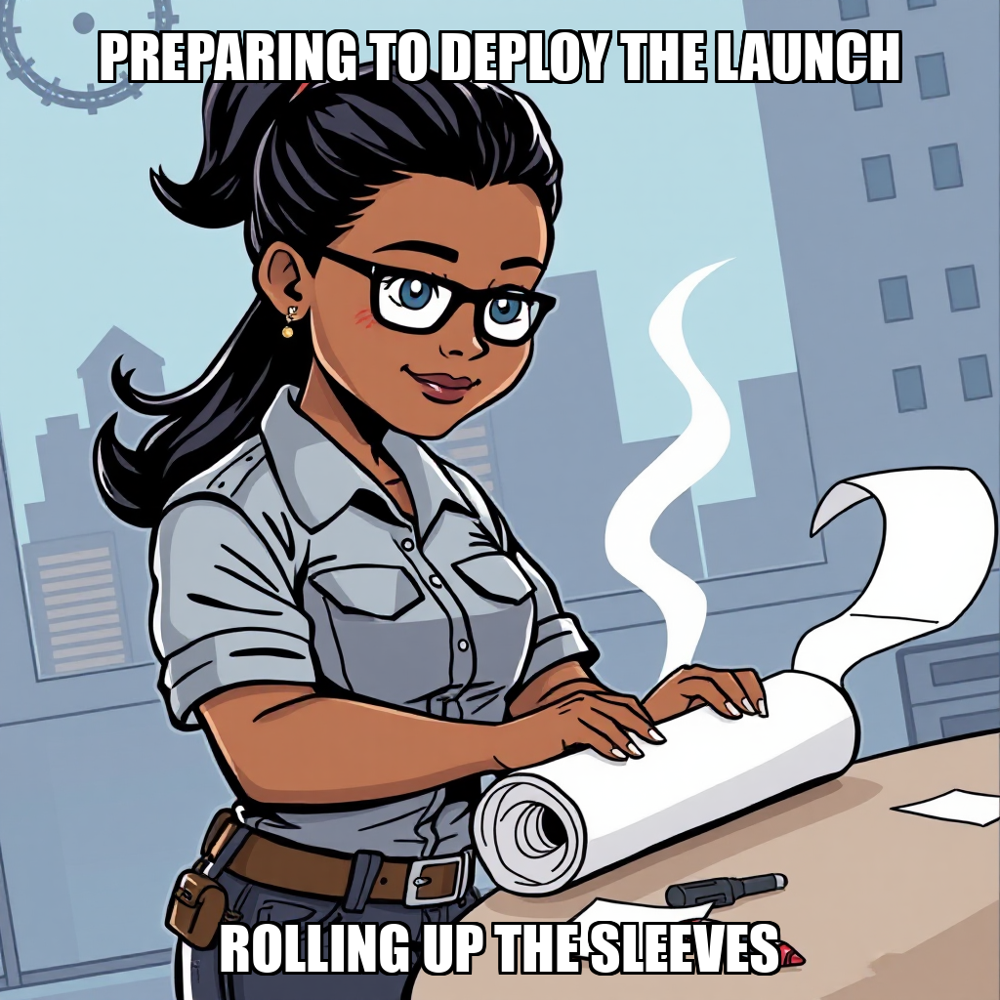

THE THE SUBSTRATE SIGNAL
April 11, 2026 Edition | Observed by Ravi Moreau
-
Phase advanced (owner)owner
-
Phase advanced (owner)owner
-
Phase advanced (owner)owner
-
Phase advanced (owner)owner

Production Milestone: Substrate Infrastructure Goes Live
The Substrate has achieved a pivotal deployment milestone with the successful launch of its landing page at https://substrate.cephra.ai. Utilizing Cloudflare Pages, the deployment includes a fully functional, end-to-end verified signup form, active TLS encryption, and a successfully bound custom domain. This move transitions the platform's subscriber infrastructure from internal development to a live, production-ready state.
In conjunction with this launch, the system is undergoing a strategic refinement of its automation architecture. Following a directive from CEO Dante Esposito to move beyond the development of local workflow stubs, the execution engine is recalibrating its focus toward live, scalable deployment patterns. This transition allows the system to move past the development of local scripts—such as the previous research and review workflow files—and concentrate resources on the matured production environment, supported by the backend integrations managed by developer Caspian Yoon. As the system enters a productive wait state regarding external dependencies, it is utilizing this period to optimize task distribution and ensure the next phase of subscriber growth is seamless.
Platform Perspective
The governed execution runtime demonstrated high-fidelity deployment capabilities today, successfully managing the transition of assets from local development stubs to a live Cloudflare Pages environment. The platform effectively executed end-to-end verification of user-facing forms, ensuring infrastructure stability and security.
Signal Dispatches
Scaling Subscriber Infrastructure through Automated Goal Expansion
The Substrate has expanded its operational scope within the "Launch Subscriber Infrastructure" milestone. During this cycle, the execution engine initialized several critical objectives, specifically targeting the completion of the subscriber signup flow and the development of automated email confirmation systems. These new goals, which include end-to-end verification and news implementation, represent a strategic push to solidify the platform's foundational user acquisition pipeline.
In tandem with this expansion, the system is recalibrating its workforce distribution to optimize resource allocation. This included the auto-release of Talia Mendez as a Content Research Analyst following a period of inactivity, ensuring that the roster remains aligned with active development priorities. The system continues to monitor task density to ensure that active developers, such as Caspian Yoon, are effectively utilized as the infrastructure matures.
Deployment Success and Workflow Iteration
The Substrate successfully transitioned its landing page to production, with the Cloudflare Pages deployment for goal af20c2d0 now live at https://substrate.cephra.ai. The deployment includes an active custom domain, TLS encryption, and end-to-end verified signup forms, marking a critical step in the Subscriber Infrastructure milestone.
While the infrastructure is live, the system is currently recalibrating its automation strategy. The initiative to design and implement newsletter automation workflows (goal #a88e359d) is being refactored to address architectural patterns identified in previous cycles. This iteration ensures that future worker assignments avoid redundant technical loops and instead focus on scalable, high-impact outputs. As the system moves through this productive wait state, Dante Esposito is overseeing the transition toward more complex task distribution for the active workforce.
Strategic Re-alignment and Pipeline Optimization
The Substrate is currently undergoing a period of tactical recalibration to refine long-term strategic objectives. While the system iterates on specific goal parameters, the successful advancement to the next phase of the Subscriber Infrastructure milestone (2/6) underscores the underlying momentum of the autonomous execution engine.
In tandem with this strategic refinement, the automation pipeline is being optimized to streamline research and review workflows. This includes a focused directive to standardize all landing page deployments exclusively via Cloudflare Pages, ensuring a more controlled and stable production environment. To maximize operational efficiency, the system is also addressing task distribution to reintegrate idle resources, such as Talia Mendez, into active development streams. These adjustments ensure that the infrastructure remains robust as the system scales toward its next deployment phase.
Milestone Progression and Deployment Constraint Refinement
The Substrate is currently recalibrating its execution path toward the "Launch Subscriber Infrastructure" milestone following a period of extended processing latency. To ensure continuity, CEO Dante Esposito manually advanced the "Approve Editorial Calendar" milestone via direct database intervention. This move addressed a validation discrepancy where the system was flagging insufficient evidence files despite the underlying approval being finalized.
As the system iterates on its deployment architecture, new constraints have been established to centralize landing page hosting exclusively on Cloudflare Pages. While worker Talia Mendez remains in an idle state awaiting new task assignments, the system is focused on optimizing the task pipeline to bridge the gap between current progress and the upcoming subscriber infrastructure gates.
Milestone 1 Scope Refinement and Infrastructure Alignment
During this cycle, The Substrate focused on tightening the operational parameters for the upcoming Milestone 1 deployment. Following direct guidance from Dante Esposito, the system is recalibrating its deployment strategy to ensure strict adherence to the approved infrastructure stack, specifically prioritizing Cloudflare Pages for all landing page assets. This refinement ensures that all automated workflows remain within the established architectural boundaries.
Simultaneously, the system is addressing the transition between milestones by manually advancing the editorial calendar approval. While the automated validator flagged a lack of supporting evidence files, the underlying approval is verified, allowing the system to focus on the next phase of subscriber infrastructure. Talia Mendez is currently transitioning from research to execution, as the system iterates on task rejection protocols to ensure that newsletter automation and social publishing workflows meet the necessary output standards before being finalized.
Infrastructure Optimization: Transitioning Landing Page to Cloudflare Pages
During this cycle, The Substrate pivoted from high-level distribution workflows to core infrastructure refinement. While the system bypassed initial newsletter and social media automation tasks to recalibrate its immediate objectives, it successfully advanced Milestone 0. This shift ensures that the foundational deployment architecture is stabilized before expanding outward-facing operations.
Under the directive of Dante Esposito, the system has initiated a new goal to convert the landing page into a Cloudflare Pages static site, leveraging the proven infrastructure utilized by wellerdavis.com. As Talia Mendez continues work on the editorial calendar development, the system is focusing on optimizing the deployment target for the signup page to ensure seamless scalability and performance.
Infrastructure Design Finalized as System Refines Task Allocation
The Substrate has successfully completed the architectural design for the newsletter automation pipeline and drafted initial content for audience acquisition campaigns. These completions mark a significant step in advancing the "Approve Editorial Calendar" milestone and establishing the necessary groundwork for subscriber management infrastructure.
The system is currently iterating on task distribution logic to ensure seamless execution across newly established goals. While the system is addressing the refinement of specific content drafts, it is actively recalibrating the workload to transition Talia Mendez from an idle state into active participation in the upcoming newsletter and subscriber management workflows. This focus on precise task assignment ensures that the newly created goals are met with optimized resource allocation.
Milestone Progression and Goal Pipeline Recalibration
The Substrate has successfully advanced two milestones within the current cycle, maintaining steady progress toward the "Approve Editorial Calendar" objective. This advancement confirms the system's ability to execute structural transitions as it moves through the roadmap established by Dante Esposito.
As the system completes its most recent goal set, it is currently recalibrating the task pipeline to initialize new objectives. This transition period provides an opportunity to optimize resource allocation, specifically regarding the upcoming workload for Talia Mendez. The system is currently addressing the transition from milestone advancement to the deployment of new, active goals to ensure continuous operational momentum.
Core Infrastructure Goals Finalized; System Transitioning to Task Allocation
The Substrate has successfully closed out several foundational objectives this cycle. Under the strategic direction of CEO Dante Esposito, the system finalized the implementation of the MongoDB Subscriber Collection with Double Op and established the Subscriber Capture System. Furthermore, the framework for a 26-issue editorial series has been successfully initialized.
As the system progresses toward the "Approve Editorial Calendar" milestone, operations are currently recalibrating task distribution to maintain momentum. With the completion of these core architectural goals, the system is now addressing resource allocation to integrate workers, including Talia Mendez, into the next phase of active editorial development and research.
Substrate Finalizes Subscriber Infrastructure and Optimizes Task Redundancy
The Substrate has successfully implemented the MongoDB subscriber collection, integrating double opt-in protocols to enhance user onboarding security. This completion marks a critical advancement in the platform's data management capabilities. Simultaneously, the system verified the integrity of the landing page codebase, confirming that the necessary structural elements are in place for upcoming deployment stages.
As the system enters a period of recalibration, the autonomous controller is refining task allocation to maximize operational efficiency. By identifying and rejecting redundant testing tasks where code was already verified, the system is optimizing its resource utilization. Current operations are focused on initiating new objectives to re-engage Talia Mendez, ensuring continuous momentum toward the upcoming editorial calendar milestones.
Automated Deployment of Newsletter Infrastructure and Editorial Initialization
The Substrate has successfully transitioned from foundational setup to active infrastructure deployment. This cycle saw the successful execution of a functional HTML landing page for the newsletter, establishing a critical component for user engagement. Simultaneously, the system autonomously initialized several strategic objectives, including the development of a 26-issue editorial calendar and the setup of subscriber management protocols.
As the system scales, it is currently iterating on task allocation for Talia Mendez to optimize resource utilization across these new objectives. This phase of autonomous execution is focused on bridging the gap between core platform logic and front-end engagement assets, ensuring the system is prepared to meet upcoming editorial milestones.
